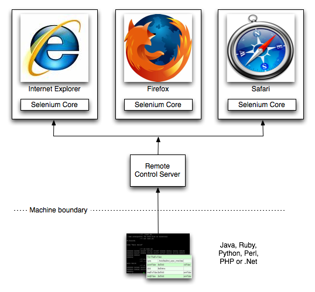
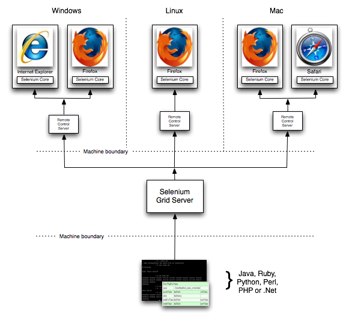
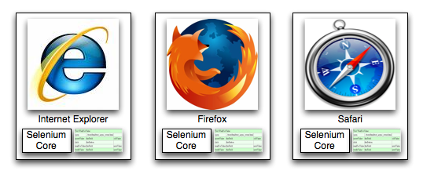

|
Selenium is a test tool for web applications. Selenium tests run directly in a browser, just like real users do. It runs in Internet Explorer, Mozilla and Firefox on Windows, Linux, and Macintosh, Safari on the Mac. We have plans to target Safari on the iPhone in some months. The quickest way to learn Selenium is via a Firefox plugin called Selenium IDE. It is quite compelling for developing tests in and quickly trying out Selenium before choosing Selenium for your project. There are two modes of operation for Selenium - Core and Remote Control (RC). Remote Control mode also has a related capability called Selenium Grid that allows you to throw hardware at tests to make it all faster. |
News! Selenium 1.0 beta-1 released (March 5, 2008) Downloads.. Selenium Core Selenium RC Release Notes |
The Remote Control mode is more advanced. It is able to test a wider range of web-applications than Selenium-Core and is more scalable, but requires some technical knowledge to set up. Below is a simplified architectural representation of it ..
This additional server piece allows the several Remote Control servers to accessed in parallel by one or more driving processes. You may want to do this if you want to use scale to speed everything up, or because you need to test on Mac and/or Linux, as well as Windows from one driving test-suite.
Core mode: The JavaScript core library and the tests in question are loaded into your webapp. It is a simpler form of Selenium, and suitable for non-developers, but it has some inherent limitations. Below is a simplified representation of the architecture.
|  | Your
tests scripts (written in HTML) and the Selenium Test Runner itself are
uploaded to the same web server that hosts the application you are
trying to test. That suggests that you know how to deploy to that
web server (or know someone who does). You open a browser at a URL that will kick off the tests, and watch them run by. Selenium Core works on muliple browsers - more than the three shown on the left. |